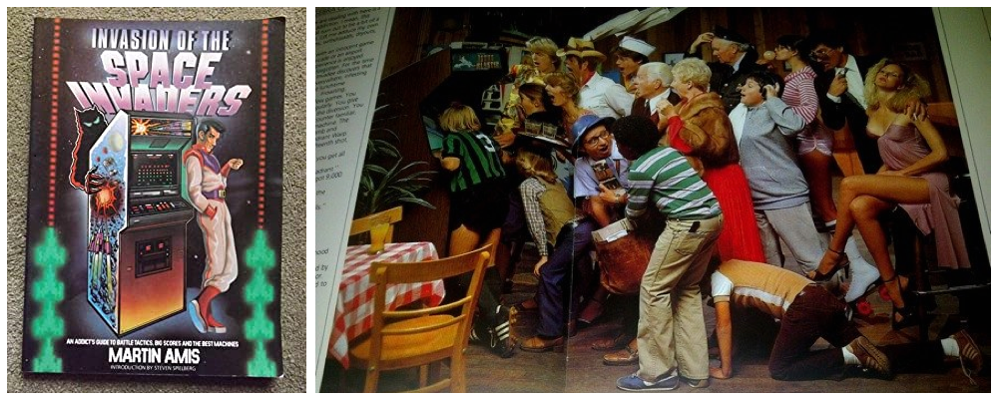

Video Game Books

Martin Amis: Invasion of the Space Invaders (1982)
This is probably the most sought-after video game book of the 1980s by the uber-famous, world-renowned author Martin Amis (most copies sell for over $200 today). Martin Amis has a unique way of bringing you back to the video game world of 1978-1982 using verbal imagery and humour - after all, he was a video game addict at the time! Some of the high-resolution colour photos in the book (including the one above) say more than words ever could. The last half of the book is an in-depth look at some of the most common video games alongside Martin’s favourite game strategies that will land you a high score. And to top it all off, it has a wicked introduction by Steven Spielberg.
Andy Hunt: The Final Day at Westfield Arcade (2013)
If you wanted to know what it was like to live in the 1980s during the height of the arcade boom, then look no further. This book is a touching fiction story that revolves around arcade culture amid the backdrop of 1980s culture. It is one of my favourite reads of all time, and one I highly recommend to anyone! The book is also packed with an incredible amount of information about the arcades themselves, and why they ultimately failed twice (in the mid 1980s, and then again after the Street Fighter boom of the 1990s). But the book doesn’t have a sad tone – it has a powerfully positive nostalgic tone.
Robert Maxxe: Arcade (1984)
This is the earliest suspense fiction novel about arcade machines and their impact on society. And it’s a phenomenally great read that has plenty of twists and a great ending! I won’t give away the plot here, but I will tell you that this book both discusses the mentality surrounding games at the time (good and bad), and lays the groundwork for the Polybius arcade urban legend. Or was it the Polybius legend that influenced this book? We’ll probably never know ;-)
Van Burnham: Supercade: A Visual History of the Videogame Age 1971-1984 (2003)
This is, without a doubt, my favourite book on video game history because it captures the entire era chronologically and with a ton of images that add visual perspective to the words. It takes you through the beginning of the video game industry in a way no other book can. The level of detail is perfect - plenty of the important stuff and just enough of the trivial stuff, with excellent quotes and information along the way. But MOST importantly, Van doesn’t just talk about the video games - she includes the other important parts of the era that shaped and enhanced video games, such as the PCs, home game consoles and movies that were released at the time. In other words, you get the big picture. With a foreword by the father of video games, Ralph H. Baer, and quotes from some of the most famous video game developers and authors of all time, this book is serious stuff. Here is the first line on the back of the book cover, which sets the tone for the book perfectly: It was a time when technology was king, status was determined by your high score, and video games were blitzing the world.
Steven Kent: The First Quarter (2001), The Ultimate History of Video Games (2001)
Firstly, both of these titles are actually the same book - Kent wrote The First Quarter and then rewrote it when offered a bigger publishing deal and called it The Ultimate History of Video Games. Both books have the same information, but the layout is different. The layout of The First Quarter is far better and much easier to read. However, if you can only find a copy of The Ultimate History of Video Games, read each chapter while skipping over the quotes, and then go back and read the quotes - by doing that, you won’t find it nearly as annoying ;-).
Roberto Dillon: The Golden Age of Video Games: The Birth of a Multi-Billion Dollar Industry (2011)
For it’s length (only 200 pages), this book is incredibly comprehensive and cohesive, while also being easy to read - it covers the whole of the video game industry (arcades, consoles, PCs) in a way that identifies the key progression of events, products and games. It’s also the only book that covers the birth of the video game industry properly without a ton of verbal diarrhea. Regardless of whether you are a video game history buff or a newbie, this is definitely a book I highly recommend.
Jane McGonigal: Reality is Broken (2011)
This is a MUST read for everyone. It discuses what makes games (of all types, with a focus on video games) appealing to us, and how they offer people more interesting obstacles, better feedback, and mental challenge than the rest of reality (hence the title). Moreover, McGonigal describes how this knowledge can be used to create games and interactive media that “fix” the way we work and live in the future. Here are three of my favourite quotes from the book:
- Today, many of us are suffering from a vast and primal hunger. But it is not a hunger for food - it is a hunger for more and better engagement from the world around us….We are starving, and our games are feeding us.
- Games don’t distract us from our real lives. They fill our real lives.
- It’s high time we start applying the lessons of games to the design of our everyday lives. We need to engineer alternate realities: new, more gameful ways of interacting with the real world and living our real lives.
Jeff Ryan: Super Mario: How Nintendo Conquered America (2012)
This book is more than just Super Mario - Jeff Ryan uses his humorous wit to guide you through the beginnings of Nintendo and the arcade age to the introduction of the NES and rise of Nintendo to ultra fame. It then takes you through the 1990s and 2000s, when Nintendo made some poor decisions that ultimately made it a niche player in the industry while still maintaining the largest game franchises in the world. It’s packed full of great detail that you won’t find anywhere else, and is written in a way that entertains as much as it educates. Don’t be surprised to find a reference to War Games or Cabbage Patch Dolls that is used to effectively illustrate an entirely different point ;-)
Rusel Demaria & Johnny L. Wilson: High Score! The Illustrated History of Electronic Games (2002)
This book is a picture-rich and detailed video game history book. Where this book really shines is in its coverage of the PC games of the 1980s and 1990s. PC games are often forgotten or overshadowed by arcade and home console games when it comes to video game history books, but this book focuses on them heavily - each section is broken down by publisher (EA, Sierra, Epyx, LucasArts, etc.) and covered beautifully.
John Sellers: Arcade Fever: The Fan’s Guide to the Golden Age of Video Games (2001)
The visual layout of this book is fantastic - there are some stellar photographs of arcade cabinets, and the writing is wonderfully cheeky (e.g. Fact: The Atari 2600 version of Pac-Man sucked). There are usually 1-2 pages describing each game, numerous callouts describing the other key events of the time to give the reader context, as well as well-placed side topics and interviews from people such as Nolan Bushnell, Eugene Jarvis, and Walter Day. It also has an awesome arcade lexicon section at the back - here are some of my favourite terms:
- arcade (n.) 1. A good-time meeting place during the Golden Age of Video Games. sometimes also containing Skee-Ball machines, Chexx Hockey, Wac-a-Mole and those annoying crane games. 2. Heaven.
- arcade rat (n.) A person who was at the arcade every time you were there and probably every time you weren’t; characteristics included a glazed-over look on the face and, quite possibly, a Triumph concert T-shirt.
- game hog (n.) A selfish person whose place is reserved in the ninth circle of hell.
- pong (adj.) Something dated. [Example: “Look at that really old guy on the Lady Bug machine. He’s so pong!”]
- video-game athlete (n.) A term applied to exceptional video-game players in an attempt to dispel the notion that video games are for nerds.
- wokka-wokka-wokka (n.) A gobbling noise that sometimes resurfaces to recovering video-game junkies in vivid flashbacks.
Leonard Herman: Phoenix: The Fall & Rise of Video Games (1997)
Unlike other video game history books, this one has few visuals. Instead, it does a very good job of describing the key pivotal moments that led to the development of video games, from the arcades of the 1970s to the home consoles of the 1990s (it focuses heavily on the development of home video game consoles throughout). However, what I like most about this book is the Foreword - it describes why video game history is important: For too long, video games have been ignored by those who guard the established order of what is and is not “history” …… If you accept the postulate that the move to an informational society that the western world is currently undergoing is the most important change in society since the industrial revolution, then video games are the most important technological incarnation of the twentieth century.
Lucien King: GAME ON: The History and Culture of Videogames (2002)
Unlike the title suggests, this book does not detail the content of the world famous “GAME ON” and “GAME ON 2.0” exhibitions that tour the world. Instead, it is a collection of experiences from various people that describe their unique take on a particular aspect of video games, and in the process does a fairly good job of giving you the perspective of what gaming was like in Europe compared to Japan and North America, while touching on a reasonable amount of historical information. For example, Canadians can identify completely with this quote from the book: The tempo is set by the USA and Japan. The consumer is always made painfully aware of this whenever a new video game system is launched. Generally it does not arrive in European shops until after its release in Japan and the USA - often at a higher price.
Marty Goldberg & Curt Vendel: ATARI Inc. - Business Is Fun (2012)
This 800 page monstrosity is well worth its size! Essentially, this book details everything you ever wanted to know about the grandfather of all video game companies from before its conception to the mid 1980s (when Jack Tramiel bought the computer and consumer games divisions). It’s all there, and from the mouths of the Atarians themselves. Atari was the only company in history to produce computers, arcade games, pinball machines and home game consoles. You’ll learn how the Pong coin-op craze built the company and led to home Pong consoles, the Atari VCS, Atari computers, Atari pinball machines, and of course the ultra famous Atari arcades of the golden era: Asteroids, Centipede, Missile Command, and Tempest. There are also plenty of great pictures in each section - I just wish they were printed in colour.
Scott Cohen: ZAP! The Rise and Fall of Atari (1984)
This is the first book written about Atari, and essentially a much smaller version of ATARI Inc. - Business is Fun. However, it does a phenomenal job of covering Atari’s history up to 1983, and has some amazing quotes from key Atari people.
Florent Gorges & Isao Yamazaki: The History of Nintendo (1889-1980) (2010), The History of Nintendo (1980-1991) (2012)
Firstly, I should mention that these books are detailed, with glorious, full-colour pictures adorning every page. Secondly, I should mention that the titles are misleading - the first book is actually a history of Nintendo from 1889 to 2000 (including the arcades of the 1980s and 1990s, and the handhelds and consoles of that time too), and the second book only contains the Game & Watch handheld games released between 1980-1991, and nothing else. So, unless you are interested in the Game & Watch handheld games from Nintendo (I had the Donkey Kong Jr. one when I was a kid), then don’t buy the second book. Regardless, the first book is absolutely amazing if you want to learn about the detailed history of Nintendo.
Harold Goldberg: All Your Base Are Belong to Us: How Fifty Years of Videogames Conquered Pop Culture (2011)
This book has a great title. Too bad the significance of the title isn’t mentioned within the book whatsoever (it is actually taken from a video game called Zero Wing). This book really doesn’t have any focus per se on pop culture either. Regardless, I’m including it here because I actually liked reading it. It’s a well-written, action-packed novel that covers the broad game industry from the very beginnings to the present. You won’t find many nerdy details in this book. Instead, it covers the events that led to the development of key video games between the 1970s and today, from the mouths of the game developers themselves. It is well crafted and contains some great behind-the-scenes dirt from major figures in the game industry.
Nick Montfort & Ian Bogost: Racing the Beam: The Atari Video Computer System (2009)
This is THE authoritative book on the Atari VCS (2600). It discuses the history, success, societal effects, and nitty gritty details of the Atari VCS (2600) including exactly how it worked and how games were programmed on it (extremely fascinating). Although it is a short book, it takes a long time to read because it is jammed packed with great information.
Ken Uston: SCORE! Beating the Top 16 Video Games (1982), Mastering Pac-man (1982)
If you are into retro gaming, these books are definitely for you. Ken Uston is a fascinating character - he is a procedural genius always looking to improve processes, and was the guy who took the big Vegas casinos for hundreds of thousands of dollars at Blackjack because he devised a complex method that involved counting cards that were dealt. The casinos tried kicking him out, but he took them to court and won. In SCORE! Beating the Top 16 Video Games, you’ll find great advice on how to master Pac-man, Ms. Pac-man, Defender, Tempest, Centipede, Galaga, Stargate, QIX, Frogger, Make Trax, Galaxian, Asteroids, Donkey Kong, Scramble, Star Castle and Space Invaders in a very short period of time. It is extremely well organized and detailed with plenty of figures, diagrams, and charts for each game. In Mastering Pac-man you’ll find an in-depth analysis of patterns and strategies that you can use to get through all of the available levels of Pac-man.
Michael Rubin, Carl Winefordner & Sam Welker: Defending the Galaxy: The Complete Handbook of VideoGaming (1982)
As the title suggests, this book pretty much has everything you could imagine on video games from the golden era, and it is extremely funny to boot! It describes video game history from two perspectives: spontaneous software (making fun of organized religion) and video evolution (a Darwin-esque approach). It even has a section on videology (making fun of astrology) with star patterns called PROWO (the frog), PAKU (the Pac-man), INVADER (the explorer), MARIO (the hero-lover), TEMPEST (the storm), and so on. You’ll find out how the yellow Pac-man character is almost identical to the mascot on CORNNUTS treats, and how some organizations at the time were trying to position video games as “perverted” and censor them - they call the joystick a phallus symbol, complain that the Ms. Pac-man intermissions don’t depict the natural reproductive cycle, etc. Better yet, you’ll learn:
- How to actually use a coin slot….with pictures for crying out loud!
- How to properly eat at a cocktail (sit-down) arcade game.
- How to properly dress for video arcades (by season). Hilarious stuff like Sundek shorts, no button-up shirts, running shoes, visor, dark glasses, down vest, hiking boots, keys hanging on belt, Sony Walkman, brand labels such as Ocean Pacific, etc.
- Warm-ups and exercises for video gamers.
- How many calories you will burn playing video games (e.g. going to the arcade, using the joystick, inserting a coin in the slot, and so on).
- Cool and not cool ways to stand at an arcade machine. The coolest way is with your feet parallel, a foot from the game, back arched slightly backwards.
The book also describes 7 types of video games according to the games of that time:
- Driving games (e.g. Turbo)
- Bottom movement games (e.g. Space Invaders, Galaga, Centipede)
- Maze games (e.g. Pac-man, Berzerk)
- Horizontal offense/defense games (e.g. Defender)
- Head upward, obstacle games (e.g. Frogger, Donkey Kong)
- Bizarre games (everything else – e.g. Tempest)
As well as 3 main types of video gamers of the time:
- Extreme gamers (a.k.a. vidiots) – Take the games too seriously. No one dates them.
- Ideal gamers – Play for the fun, and are pretty good.
- Novice gamers – Only play when pressured or nothing else to do. They often date ideal gamers.
And to top it off, it describes the top 20 video games of:
- June 1980 (first 5: Asteroids, Galaxian, Space Invaders, Rip Off, Deluxe Invaders)
- April 1981 (first 5: Defender, Pac-man, Asteroids, Berzerk, Phoenix)
- July 1982 (first 5: Ms. Pac-man, Zaxxon, Donkey Kong, Pac-man, Turbo)
- Sept 1982 (first 5: Ms. Pac-man, Tron, Pac-man, Donkey Kong, Galaga)
It is an awesome read that will keep you laughing on every page with plenty of video game information relevant to 1982, lots of nostalgia, and a small amount of game strategy/advice. Here are my favourite quotes and terms from the book:
- With a joystick in your hand and a twinkle in your eye, take control.
- Video gaming is serious stuff. As such, you should learn how to dress for it.
- Video virgins can be spotted as easily as punk rockers at The Cotillion.
- They say things such as “Whatever happened to PONG?”
- Parking factor (PF) – The number of viewers who can watch the screen of a game in action without disrupting the player.
- Parking factor dispersal (PFD) – A phenomenon that occurs in the final moments of an observed game; the crowd will disperse when it realizes that the gamer is about to lose.
- Jamming in – The act of placing a coin or token on a video machine presently in use in such a way that the present gamer and future gamers understand the intentions of the coin’s owner to play that particular machine. Never jam when there are already four other positions jammed for.
- Peak gaming hours (PGH) – Time of day or week when arcades are not too crowded, or when you can readily avoid imposing authorities (parents, teachers, employers).
- Za – Another name for pizza. Easily forced into mouth during good gaming. Gamers can be heard to shout “ZA!” meaning “Quick, bring me some pizza before the 43rd attack wave finishes me off.”
- Galaxian (Midway): How this baby did so well is beyond imagination.
Craig Kubey: The Winners’ Book of Video Games (1982)
This book was written at the height of the video game era, and you can see the intense optimism of that era when reading the introduction. It mostly focuses on the arcade games of the era, even though there is a section on home video games too. The greatest feature of this book is that it reads like a an action novel rather than a strategy guide - each game is given a detailed and humorous introduction, followed by some extremely useful tips that are seldom seem in other books of that era. It’s definitely a laugh out loud sort of book with its witty style and crazy 80s references. While it covers the classics from 1978/1979/1980 in depth (e.g. Space Invaders, Asteroids, Missile Command, etc.), the sections on the games of 1981/1982 are much shorter (e.g. Galaga), likely because they haven’t been out long enough by the time the book was written.
Simon & Schuster (publisher): Playing Ms. Pac-man to Win! (1982)
Pac-man is easy because it is all about memorizing simple patterns in the same maze over and over again, and predicting the ghost’s behaviour. However, Ms. Pac-man is much more difficult because it is faster, unpredictable, and has 4 different sets of mazes. If you want to get very good at Ms. Pac-man, you’re going to want to read this short book (it’s only 32 pages). It may be small, but it is full-colour, and doesn’t waste time talking about the game - instead, it gives you brief directions and pictures of each maze by level, and draws solid paths on each maze that guide you through a level in a specific period of time.
Karen Collins: Game Sound (2008)
Sound has always played an extremely vital role within video games, from the 8-bit games of the arcade era to the ultra-immersive games available today. If you want to learn how video game sound and music has developed over the years, including the detailed mechanics of it, then you should read this book. But the book doesn’t just cover the history of game sound – it also discusses how sound is designed and incorporated into video games today, as well as the impact of popular music on games and vice versa.
Doug McCoy: Arcadian: The Great Arcade Games of the 1980’s (2012)
This is a short 65-page memoir that you can buy as an eBook for 99 cents from Amazon, Kobo, and various other eBook sites. It details why video games appealed to kids growing up in the 1980s from the author’s viewpoint (which mirrors mine exactly, since we are the same age). Doug talks about how arcades were everywhere - in pizza parlours, K-Mart, Sears, motel lobbies, and even public swimming pools (useful when your mom says you have to wait 15 minutes after eating to swim). He talks about how you had to carefully choose what games you played because quarters didn’t grow on trees, and what game features made a particular game more appealing than another. He also notes how games of the 1980s promoted the optimistic belief that a single skilled fighter could drive back waves of aliens, save the world, and rescue the damsel in distress. That was why kids growing up in the 1980s (like myself) loved video arcades. I also like that Doug mentions how video games in the 1990s showcased better graphics, but became more expensive (usually 50 cents or $1), as well as darker and more violent. With the proliferation of home game consoles that had great graphics in the 1990s, it became harder to justify spending money on an arcade. In contrast, playing games on home game consoles of the 1980s was far crappier than on an arcade machines. Moreover, around 1990, people started flocking to those games that are better suited to PCs and home game consoles because they take much longer to play (e.g. Legend of Zelda, Day of the Tentacle). Ultimately, the video arcade died out, and those few places that still had some arcade games shifted their focus to redemption games.
Rob O’Hara: Invading Spaces: A Beginner’s Guide to Collecting Arcade Games (2008)
If you are an arcade game collector like me, or want to eventually buy an arcade machine, then you MUST read this book. Rob details pretty much everything you need to know, including arcade terminology, how to buy arcades (and the people you’ll be dealing with), how to move them, how to troubleshoot/repair the cabinet and internals, how to decorate a games room, and how to set up a MAME arcade. Although he doesn’t come out and say it outright, there is something that you can glean from this book: why people collect arcade games. Some of us collect video games to keep an important part of history alive - some of us love simply working on them and restoring them - some of us do it to make money by reselling them afterwards - and some of us do it because it is just “cool.” Regardless, all video game collectors grew up going to video arcades and playing arcade games……and see no reason to leave those experiences in the past. As Rob puts it: As long as those of us who have those memories of playing physical machines are still alive, I think the future of collecting arcade games has hope. Once we’re dead, all bets are off.
Ernest Cline: Ready Player One (2011)
Unlike the other books in this category, this book is a fiction novel that has an absolute TON of information on the video games of the 1980s. As a fiction novel, it is pretty good too - the first third of the book has a lot of fantastic grit and momentum, but the rest is pretty bland and predictable. However, considering that the whole book revolves around 1980s culture, specifically video games, it’s a worthwhile read that is both nostalgic and funny. The only downside of this book is the sheer amount of 1980s nostalgia that Cline vomits over everything. If he had toned it down to a digestible level, it’d be a far better book.
Scott Rogers: LevelUP! The Guide to Great Video Game Design (2010)
This book should really be entitled “All about the video game industry and how to make video games in plain English for the average Joe.” It’s for anyone who wants to learn the terminology and basic concepts surrounding video game design and development (or game developers who want a “back to the basics” refresher). It is very easy to read, has plenty of illustrations, and lots of great humour - I busted a gut when I read the terms sphincter twitcher and DIMS (Doom-induced motion sickness).
Brian Ashcraft: Arcade Mania: The Turbo-charged World of Japan’s Game Centers (2008)
Simply put, this book is a fascinating read. It guides you through the different dimensions of Japanese arcade culture, from the teen girl sticker pic craze, to the amateur fighting games peddled at doujin meet-ups, to the bullet hell arcades where grimy VCRs are used to tape performances so that players can watch their plays at home and refine their strategy for next time. In the end, you’ll get an amazing appreciation of why arcade culture is alive and well in Japan but largely dead in North America and the rest of the world.
R. L. Stine (as Jovial Bob Stine): Blips: The First Book of Video Game Funnies (1983)
Yes, this was written by the same R. L. Stine that wrote the Goosebumps and Fear Street series. But this time, he wrote a funny arcade book - the kind you’d read in a single sitting while on the toilette and laughing out loud (that is, before you realize that your legs have fallen asleep). If you’ve lived through the arcade era of the early 1980s, you’ll get a big kick out of the humour in this book. For some reason, its style reminds me of MAD Magazine.
Len Albin: Secrets of the Video Game Super Stars (1982)
This is one of the best arcade game strategy books I’ve read, and the one that you’ll want to read if you want to get really good at a specific game. As its title suggest, all of the detailed (and often illustrated) techniques for each game comes directly from key people who are incredibly good at the game, rather than from a single author. Better yet, the book covers a large number of games in depth, including Armor Attack, Asteroids, Asteroids Deluxe, Battlezone, Berzerk, Centipede, Crazy Climber, Defender, Donkey Kong, Frogger, Galaxian, Galaga, Gorf, Missile Command, Monaco G.P., Moon Cresta, Mousetrap, Omega Race, Pac-man, Phoenix, Qix, Scramble, Space Invaders, Stargate, Super Cobra, and Tempest.
David Kushner: Masters of Doom: How Two Guys Created an Empire and Transformed Pop Culture (2003)
This book follows the co-creators of the games that revolutionized PC gaming in the 1990s (Commander Keen, Wolfenstein-3D, Doom and Quake): John Carmack and John Romero. It talks about their rise to fame as great programmers, the success of their Shareware distribution model, how John Carmack’s focus and discipline enabled the creation of the bleeding-edge game engines, and how John Romero’s programming skills stagnated in the light of success and how he went on to waste away as a level designer. It details some great lessons for any programmer and anyone in the game industry.
Jeff Rovin: The Complete Guide to Conquering Video Games: How to Win Every Game in the Galaxy (1982)
Let me start by saying that I don’t recommend reading this book at all. It’s terrible. The only reason I’m including it here is because it is quite clearly the worst book video games ever written. Sure….there are some other video game books that aren’t very good (some of which I’ve listed above), but each of them have some redeeming quality or topic that makes it a worthwhile read. This book, however, has no redeeming qualities. The author covers the basic information about each game (the same information you can glean from the box the game came in, or the instruction card for the game itself). Don’t expect any fancy secrets that will help you win any of the games in the book……you won’t find anything beyond the basics here, and the author certainly doesn’t seem like a hardcore video game player in any way. It’s almost as if he just wanted to put out a book on video games to capitalize on a hot topic of the time. And I’m sure many copies made their way into libraries……but really, this one is just a waste of paper.
Tim Lapetino: Art of Atari (2016)
Let me start by saying that this book is not a coffee table book of artwork made by Atari. Instead, it is a book that details how art of all kinds (arcade, box, game promos, blueprints, etc.) were created at Atari, and showcases many of the “star” artists at Atari with great interviews, quotes and a massive amount of background information. And yes, there are some really nice pictures in there too!
Raiford Guins: Game After: A Cultural Study of Video Game Afterlife (2014)
This book is an academic read on how we represent arcade/video games after their heyday. There are definitely some great gems in this book (Cliff Spohn’s art, Van Burnham’s arcade, key excerpts from books of the era, etc.), and pictures are used to illustrate key topics. I enjoyed reading it, but there are two things that bugged me:
- The typo on page 11 (Space Invaders was NOT made by Namco)
- The author never visited Game ON 2.0 (which actually contains all of the key elements for properly showcasing the whole arcade/game experience that he criticized all other game exhibitions for not having)
Mark J.P. Wolf: The Video Game Explosion: A History from Pong to Playstation and Beyond (2008)
This book is essentially a bunch of essays from different people about various aspects of video games and video game history. It includes topics that you don’t normally find in other books on video game history, such as the development of video games in Europe and Asia. Some of these essays are brilliant gems, while others are crap (skim through those). While some of the essays are written by video game experts, others are written by academics studying some aspect of video games. As a result, you’ll find a plethora of technical typos (e.g. Defender was a vector arcade game? Nope.). Most of these typos are in the sections written by Mark J.P. Wolf, so you may want to skip those altogether ;-)
David Sudnow: Pilgrim in the Microworld (1983)
This is a fun read that details the exact processes we use when mastering a video game. The author is a middle-aged sociologist in the early 1980s who first watches his son play Missile Command in an arcade, and then later becomes addicted to video games himself when he plays Missile Command on the Atari 2600. He then spends a massive amount of time perfecting the Atari 2600 Breakout game, which he describes in great detail and with plenty of humour ;-)
J. C. Herz: Joystick Nation: How Videogames Ate Our Quarters, Won Our Hearts, and Rewired Our Minds (1997)
This is a cheeky and delightful read on everything video game-related until 1997. Although it contains video game history, it focuses on HOW video games evolved with society and WHY things happened the way they did - this makes it unique when compared to most other video game books. Plus, it is chalked full of funny and/or epic perspectives - here are a few of my favourites:
- If “Citizen Kane” took place in the twenty-first century, Orson Wells would be sighing, “Mario!” instead of “Rosebud.”
- Arcade games (and their home console translations) came out of the pinball world. They were about fast action, visual pizzazz, and rapid wrist action. PC games sprang from the arcane realm of mainframe computers and the hacker “Dungeons & Dragons” Sci-Fi culture. They were slower and less visual and came with thick manuals and complicated back stories.
- There’s also a category that could be called the “raining shit” games, like “Missile Command”, where things are just falling and you have to catch them or deal with them in some fashion.
- Thus began the arcade sanitation crusade, which meant, first off, that sometime around 1981, video arcades shifted their lighting scheme from black to a shade I like to call “clockwork orange,” which was the colour of pizza grease, only much more intense. It made everyone look like a poster boy for jaundice. But apparently, this bizarre tangerine hue achieved its goal, which was to pacify mall developers and convince Mom that the arcade was a safe place to dump little Johnny while she went shopping.
- It is clear that Skee-Ball is the perfect diversion for these coddled baby boomer larvae. Swathed in the security of their parents’ mutual funds and sport utility vehicles, these kids are growing up with the limited cognitive palette and glacial motor skills of scaled-down bowling simulators, rather than, say, maneuvering for their lives against a ballistic arcade space monster screaming “Run, Coward! Run! Run!”
- Eventually, video games were blamed for destroying the minds of a generation and generally sending society on a toboggan ride straight to hell.
- Today’s joystick jockeys, as Ronald Reagan likes to argue, are tomorrow’s high-tech soldiers.
- The artists and animators who render video games on Silicon Graphics workstations can only afford to do so because SGI’s largest customers, until recently, were companies like Boeing and Lockheed that needed computational Clydesdales for military projects. If they hadn’t bought thousands of these machines, it wouldn’t be economically possible to develop “Donkey Kong Country 2” or “Battle Arena Toshinden” or “Toy Story.”
- One of the Rand Corporation’s earliest cognitive psychology experiments was an ICBM simulation to determine how many missiles an air defence tracker could track before becoming overwhelmed. Years later, a virtually identical game was mass-marketed as Atari’s “Missile Command.”
George Sullivan: Screen Play: The Story of Video Games (1983)
This is a fairly short book on the history of video games up until 1983 that reads more like a library reference book on the subject (it’s not a bad read by any means). The main reason I’m including it here is that it contains some great photos that you won’t find anywhere else - for example, below you’ll find a mall advertisement outside an arcade in NY, the original bar where Pong was tested (formerly called Andy Capp’s, it was renamed to the Country Store by 1983), a picture of various arcade tokens from arcades around the US, and a picture of Dona Bailey (developer of Centipede):